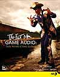

|
Risk and Trivial Pursuit | 1, 2, 3
A game company was once considering hiring a TV composer whose work they liked. I listened to his work, found it not far out of reach, and offered to imitate his style for half his cost. For a moment, I thought that this might seem like an unkind thing to do to that composer. So I added that they should tell him that if he wanted to imitate my style at half my price, that would be fine with me, because, after all, fair is fair.
Dianne's eyes widened as she drew her hands to her mouth and whispered, "Oh my god!"
And how do you
do it? How do
you innovate?
It's easy:
You take a
risk.
How do you
take a risk?
Simple.
YOU DO NOT DO
WHAT WORKS.
It's good to know what works. It's good to know what people seem to like. But the difference between doing only what works and what could work is the difference between following and leading.
Read this sentence:
You cannot
innovate
by only doing
what has
worked
in the past.
This would be a good time for you to consider reading Bruce Sterling's talk in the appendix "Bruce Sterling's Famous GDC Speech” but allow me to sum up its salient points here:
As gamers, we bring to the world some very special gifts. We move forward at lightning speed and embrace technology and invention in a way that surpasses every group of people that has ever come before in all of history. To play it safe in this business is to deny our inner nature. It is to deny our responsibility to the world and to the players. To not take risks is to go against the very principles of fun and risk that define the art of game development.
In short, This Is Gaming. If you're not exposing your players to anything new, then you are just asking them to connect dots. Connect-the-dots is not a game.
God put you
on this planet along with
the other game makers that you might complete
your mission, a crucial part of which
is scaring the crap out of your investors.
You are to do this by exposing those investors to your brilliant but untried ideas. And if the thought of that investor walking out the door with his money is too frightening for you, and because of that, you can only bring yourself to propose ideas "that work" and "that people like,” then you are not a game maker, you have no idea what makes games fun, and it is morally imperative that you go into another business.
You might try selling soap. People always need soap. And if you don't want to sell soap, then take risks. Start with the Big Risk, where John and John started: Dedicate your life to your work. And then, you gotta go past them, you gotta innovate, you gotta keep on going. Where? To take the Big Fat Challenge.
The Big Fat Challenge:
Let's make some kind of new sound,
like John Lennon did for rock and roll,
like John Williams
did for movies, but let's use that
interactive engine,
and that gaming mentality,
and that
unique vision,
and that talent for invention,
and let's by-God make game audio
do something for peoples' hearts and ears
that movies, that rock-and-roll, that EVEN
JOHN WILLIAMS could never do.
I'll even give you the one thing that the True Gamer in you can't resist. I hereby bet you 10 bucks you can't do it.
 Buy the book

|